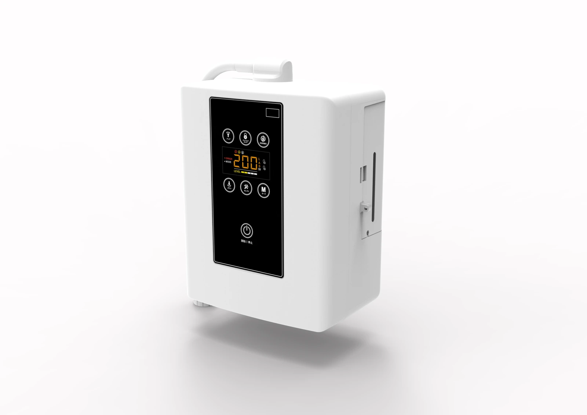
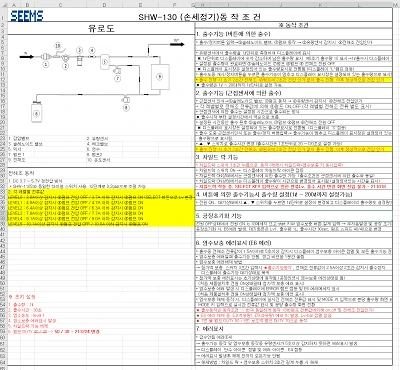
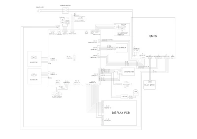
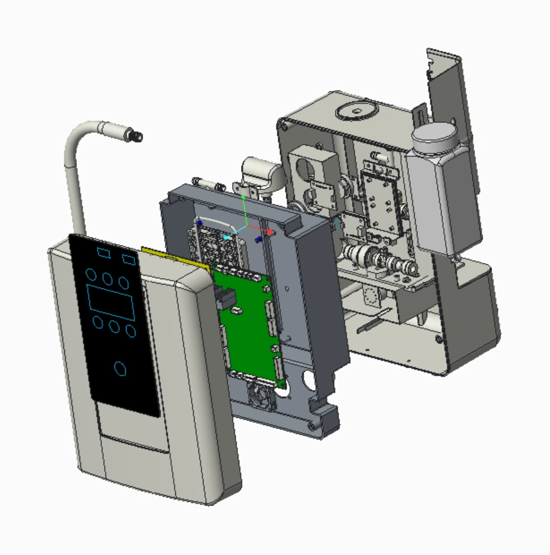
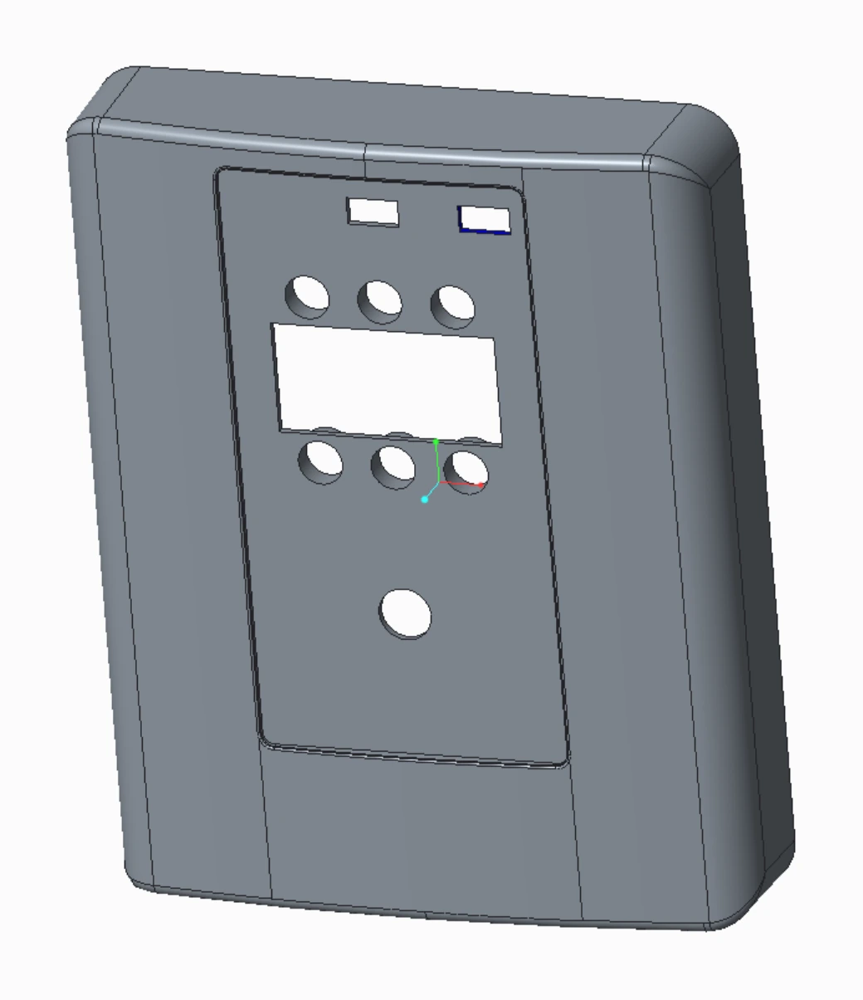
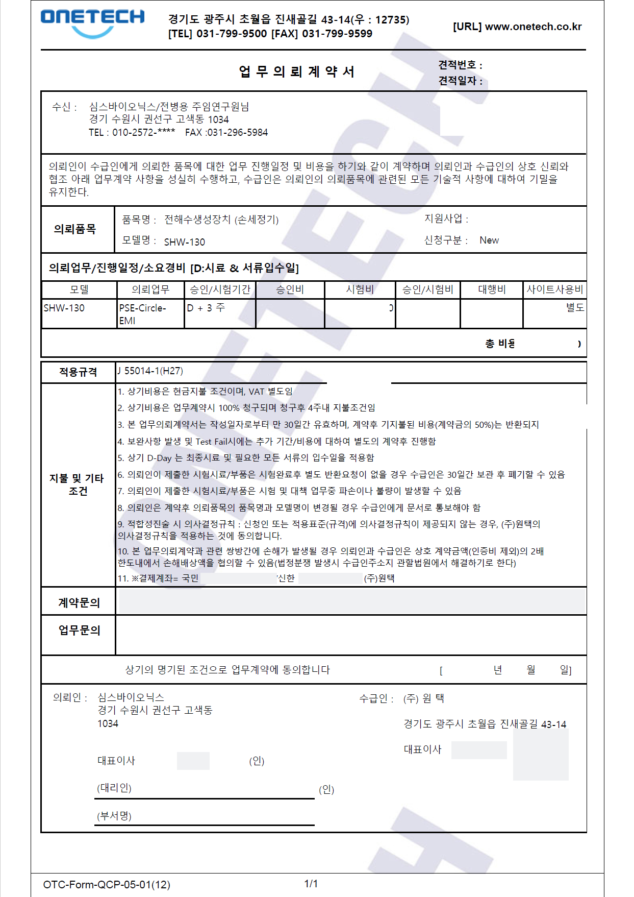

PROJECT 02
살균소독수 생성기 [SHW-130]
설치 환경에 영향을 받지 않는 살균소독수 생성기 개발
본인 역할 · 인력 구성
시스템 구상 1명 (100%) / 기구설계 3명 (95%) / 매뉴얼 및 안전인증 3명(70%)
2021. 02 ~ 2021. 10 (9개월)
설계 · 구현 근거 보기 ↓

원본 확대 이미지를 불러오지 못했습니다. 원본 확대 링크를 이용해 주세요.01 / PURPOSE & ROLE
목적과 수행 범위
원본 8–9페이지COVID 19 판데믹 발생으로 인한 살균소독수 수요 증대와 시장 확대
제품군 특성상 설치 환경에 민감한 영향을 받으나, 급수량 등
환경요소를 극복하는 살균소독수 생성기 개발
- 시스템 구상 및 프로그램 동작도 제작
- 외관 설계 및 내부 부품 Lay-out 배치
- 서비스메뉴얼 및 전기안전인증
작업 기간
2021. 02 ~ 2021. 10 (9개월)
인력 구성(기여도)
시스템 구상 1명 (100%) / 기구설계 3명 (95%) / 매뉴얼 및 안전인증 3명(70%)
프로젝트 목적
설치 환경에 영향을 받지 않는 살균소독수 생성기 개발
프로젝트 내용
Ph 5.0~6.5 / 10~50ppm의 염소농도의 살균소독수 생성 능력 설치 환경에 영향을 받지 않는 제품 개발 - 급수량 변화 및 수온에 의한 영향을 최소화 금형 제작 비용 0.5억 이내 - 기존 생산 모델 대부분의 사출을 공유
주요 업무 및 상세 역할
시스템 구상 후 동작설명서 작성 및 PCB 제작의뢰 내부 Lay-out 배치 및 외관 설계(금형 또는 NCT), 부품 선정 PSE 전기안전인증 진행
사용언어 및 개발 환경
3D Tool : CREO 3.0 2D Tool : Auto Cad 2D
02 / 시스템 · 제어
시스템 구상 후 동작설명서 작성 및 PCB 제작의뢰
원본 10페이지동작설명서 및 PCB 제작 의뢰
시스템 구상 후 JIG 제작하여 성능 테스트
성능검토 완료 후, PCB 협력사와 미팅, PCB 제작 진행
작업 내용
제품 동작을 위해 센서 인식에 따른 부품 가동의 제어 조건을 지정하여 협력사에 전달
제어 조건에 따른 PCB 회로도 및 전기배선도를 확보 Wire-harness 및 내부 Lay-out 배치에 참고


원본 확대 이미지를 불러오지 못했습니다. 원본 확대 링크를 이용해 주세요.

원본 확대 이미지를 불러오지 못했습니다. 원본 확대 링크를 이용해 주세요.03 / 기구설계
내부 Lay-out 배치 및 외관 설계(금형 또는 NCT), 부품 선정
원본 11페이지CREO Tool을 이용한 3D 모델링 설계
제품 구성에 맞는 소재와 가공방식 선택 (사출 금형)
내부 Lay-out 배치 및 필요한 부품 설계
작업 내용
ABS 및 P.P재질 등 필요한 사양에 따른 내/외관 3D 설계
체결 구조에 따른 BOSS, 응력에 따른 LIB, 사출시 필요한 구배 각을 계산하여 설계에 반영
개발비 절감을 위한 BODY ASS’Y 품목들은 기존 양산 제품과 동일한 부품을 사용하여 금형비를 절감하여 총 5개의 추가 금형으로 제품 개발을 완료함
양산을 위한 조립성 검토 및 형합 구조를 검토하여 설계 진행


원본 확대 이미지를 불러오지 못했습니다. 원본 확대 링크를 이용해 주세요.

원본 확대 이미지를 불러오지 못했습니다. 원본 확대 링크를 이용해 주세요.04 / 인증 근거
PSE 전기안전인증 진행
원본 12페이지PSE 전기안전인증 진행
일본 판매를 위한 PSE 전기안전인증 진행
작업 내용
PSE-CIRCLE 안전인증 진행
EMI TEST 참관 및 인증 진행 시 필요 서류 대응


원본 확대 이미지를 불러오지 못했습니다. 원본 확대 링크를 이용해 주세요.